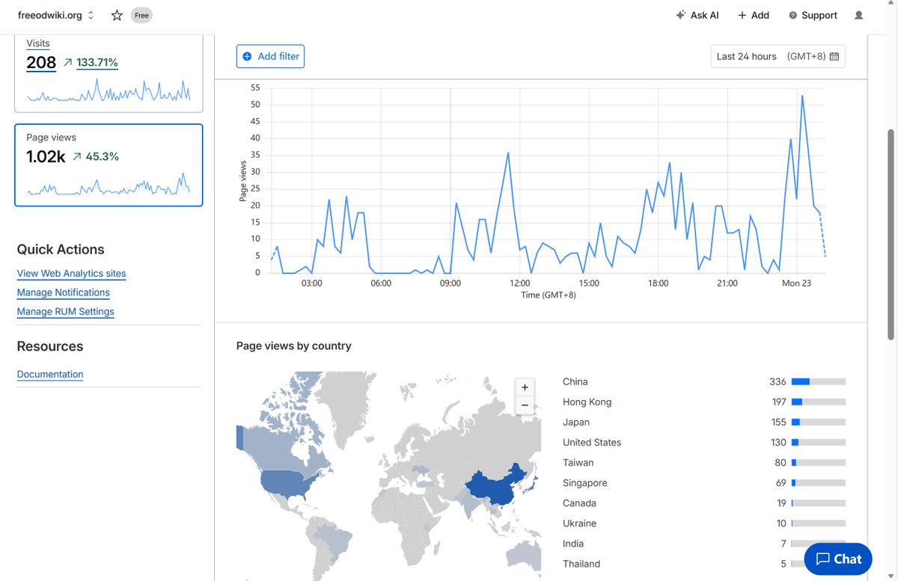

冰棍好烫喵 🍥🧊🍔🍟🍜🍣🍙🍧🍮🍩☕️💊🤤
@bghtnya
@SalviaSWC 支持

鼠尾草～🌿
@SalviaSWC
感谢大家的支持，fow网站的页面单日访问量首次破千啦🥰
这是一个重要的里程碑，我们不会辜负大家的支持哦🥹
最近在整理od圈的历史，作为后来者，窝不清楚很多历史细节。如果有熟悉那段历史的朋友，可以私信分享给我哦，或直接在github上编辑。记录共同走过的那段路，对我们所有人都是很有价值的哦🥺 https://t.co/WWYTB8EaN3